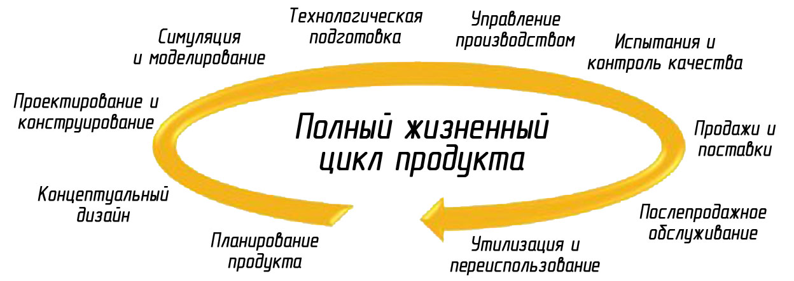
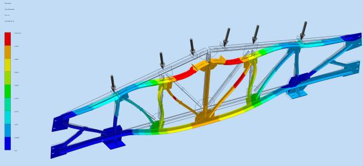
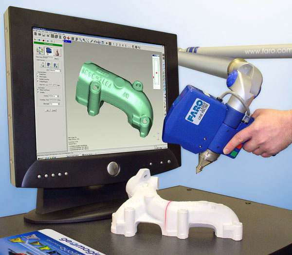

Любое изделие проходит долгий путь от идеи до серийного продукта.
Пожалуй, наиболее важный этап этого пути - конструирование.
Конструирование
Конструирование — это деятельность по созданию материального образа разрабатываемого объекта, ему свойственна работа с натурными моделями и их графическими изображениями (чертежи, эскизы, компьютерные модели).
Конструирование может осуществляться:- вручную при помощи чертёжных инструментов, например, кульмана (чертёжного стола)
- автоматизированно — при помощи систем автоматизации проектных работ (САПР)
Во многом от этого этапа зависят потребительские и эксплуатационные характеристики изделия, начиная от удобства использования и заканчивая специфическими параметрами, вроде взрывозащищенности. Это в равной степени относится как к потребительским товарам, так и к промышленному оборудованию. Инженер-конструктор обязан хорошо представлять себе весь процесс производства для того, чтобы не допустить возникновения необоснованных требований к точности изготовления деталей и, следовательно, удорожанию конечного продукта.
Инженерные расчеты
В процессе конструирования проводятся многочисленные инженерные расчеты для определения оптимальных параметров изделия, а также проверочные рассчеты для определения соответствия эксплуатационных характеристик заданным. Поэтому инженер-конструктор должен обладать обширными знаниями в классических инженерных дисциплинах, таких как сопротивление материалов, детали машин, теория механизмов и машин, хорошо ориентироваться в точных науках, таких как интегральное и дифференциальное исчисление, теория вероятностей. Так же конструктор должен быть в курсе послединих достижений науки и техники и уметь применять расчетные модули систем автоматизированного проектирования (САПР) для расчетов методом конечных элементов (МКЭ) и оптимизационного анализа.
Прототипирование
Так же для определения соответствия эксплуатационных характеристик заданным служит прототипирование.
Прототипирование, согласно Википедии, — это быстрая реализация базовой функциональности для анализа работы системы в целом. На этапе прототипирования малыми усилиями создается работающая система (возможно неэффективно, с ошибками, и не в полной мере). Во время прототипирования видна более детальная картина устройства системы.
Прототип изделия может быть создан как традиционными методами удаления материала (точение, фрезерование, электроэрозионная обработка), так и при помощи новейших технологий послойного наращивания.
Существует несколько основных технологий послойного наращивания:
- стереолитография (STL — stereolithography)
- нанесение термопластов (FDM — Fused Deposition Modeling)
- лазерное спекание порошков (SLS — Selective Laser Sintering)
Все названные технологии предполагают наличие трёхмерной компьютерной модели детали. Большинство известных САПР обеспечивают экспорт моделей в стандартном для быстрого прототипирования формате STL. Установки послойного наращивания часто называют трёхмерными принтерами.
Назначение быстрого прототипирования:
- для оценки эргономики, визуализации, дизайна изделия
- для функциональной оценки изделия (проверка качества сборочных изделий, аэродинамических характеристик, практичности)
- использование в качестве модели для дальнейшего применения в производстве (в качестве литейной формы, электроэрозионного инструмента и др)
Реверс-инжиниринг
Реверс-инжиниринг (обратная разработка) - исследование некоторого устройства или программы, а также документации на него с целью понять принцип его работы, сделать изменение, или создать устройство с аналогичными функциями, но без копирования как такового.
Метод реверс-инжиниринга позволяет сократить время на разработку 3D-модели, а зачастую является единственной возможностью математически описать какое-либо уникальное изделие, на которое отсутствует конструкторская или любая другая документация. Новейшей тенденцией в этой области является оцифровка изделия методом 3D сканирования. Но зачастую, без снятия точных размеров электронными приборами и координатно-измерительными машинами обойтись невозможно.
